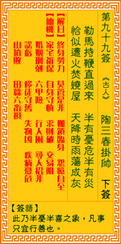

观音灵签第九十九签 【陶三春挂帅】 |
 | |||
等闲骑马著鞭来 半有忧危半有财 似火方烧头上屋 天教一雨荡殃灾 |
||||
| 【吉凶】 | 下平签 | 【宫位】 | 亥宫 | |
| 【签语】 | 此卦半忧半喜之象，凡事只宜行善也。 | |||
| 【解曰】 | 终身劳力 莫管是非 枷锁临身 怨尤自至 | |||
| 【仙机】 | 此签家宅祈保，自身守慎，求财破，交易阻，婚姻刑克，田蚕六畜损，六甲险， 行人困，寻人招非，讼亏，移徙守旧，失物见，疾病忧危 ，山坟败。 | |||
| 【详解】 | 闲来无事抽鞭驾马而来，是福是祸还难以预料;就好像大火刚烧至屋顶，谁能知忽然上天降了场及时雨，把火势给浇熄了。 知如不知，不管是非，身临枷锁，恩赦放归。此签凶危有财之象，凡事先凶后吉。 本签示之于弟子曰。凶危有财之象。凡事凶后吉耶。等闲骑马着鞭来。半有忧危半有财。似火方烧头上屋。正受灾殃之刻。一场大雨来了之后。方可将灾厄洗清而 去。目下虽事难成。劳心劳力之后。必有转安之时。易言之。君汝也。知如不知不管是非身临枷锁恩赦放归。 此签有”祸福未定”之意。提醒当事人，凡事保持乐观。须知事事无绝对，好的不见得就好，坏的也不见得是坏。有些事情往往出乎我们意料之外，是好是坏，不 到时候，都还很难说。因此，何必杞人忧天，去设想还没有发生的事。不如保持平常心、凡事乐观以对。所谓”既来之，则安之”。须知有得必有失，有失必有得 。 | |||
| 【典故】 | 陶三春即宋朝初年郑恩（子明）之妻。初，赵匡胤和郑恩结拜为兄弟，著名武师陶洪有女名陶三春，郑恩与之比武，不能取胜。陶洪爱郑 恩之武艺人才，将三春许配与他为妻。后来三春之子郑印长大往山中学艺，十二年后才回家，并带着妻子王玉娥到汴京认母。这时赵匡胤征南唐被困，石朝怀回朝搬兵，陶三春挂 帅带郑印，王玉娥等率兵下南唐，与高俊保刘金定夫妇会师作战。《宋太祖征南唐》故事 | |||